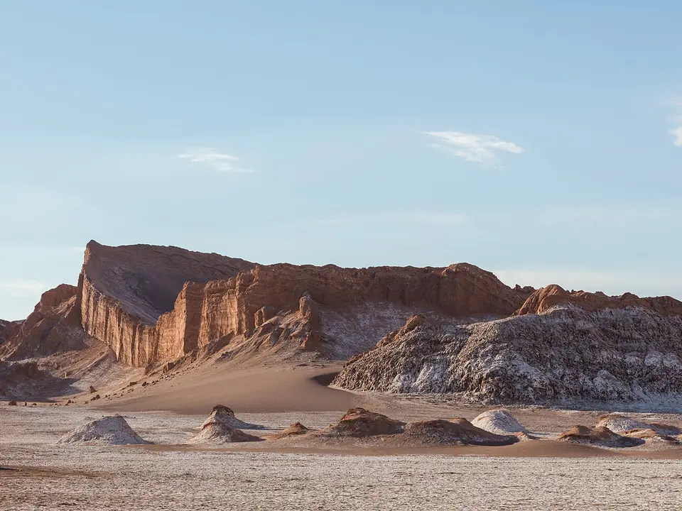
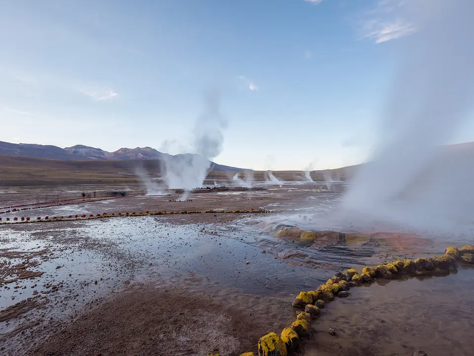
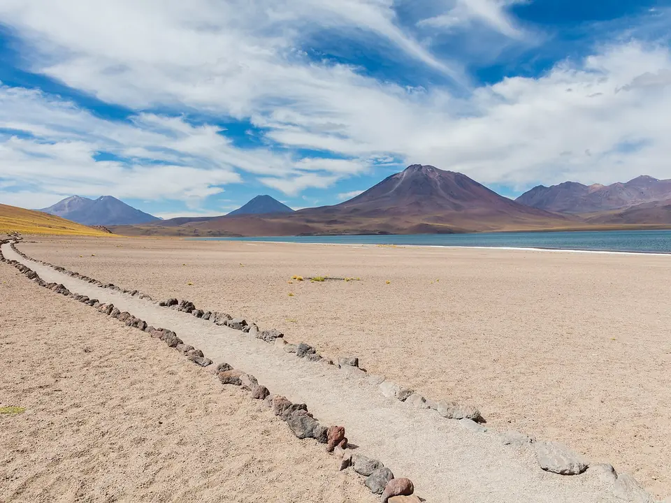
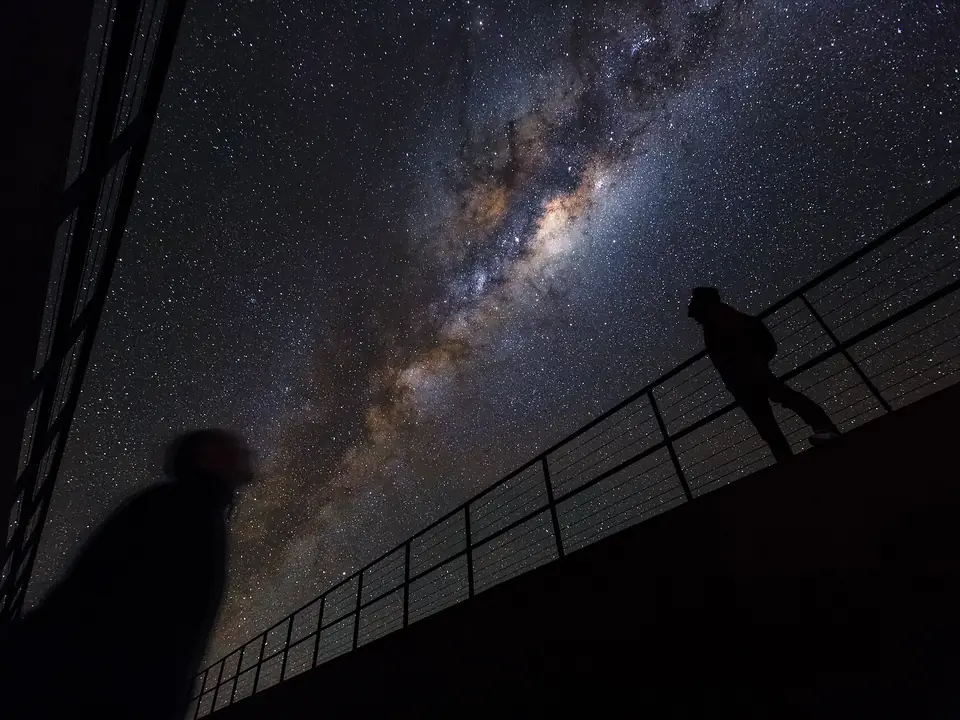

Uno de los desiertos más áridos y extraordinarios del planeta, a 2.400 m sobre el nivel del mar. Salares, lagunas turquesas, volcanes y formaciones milenarias, recorridos en expediciones privadas y con base en hoteles boutique y refugios en el desierto.
Experiencias destacadas
- Valle de la Luna y Valle de la MuerteDunas, montañas de sal y formaciones esculpidas por millones de años de erosión. Atardeceres y sandboard en sectores habilitados.
- Géiseres del TatioAmanecer a más de 4.300 m, entre columnas de vapor y montañas andinas.
- Lagunas altiplánicas y Salar de AtacamaLagunas de un azul intenso, salares y reservas donde habitan flamencos.
- Astronomía bajo las estrellasUna noche privada de observación, con telescopios y guías especializados.
- Piedras Rojas y Salar de Aguas CalientesMontañas rojizas, aguas turquesas y la inmensidad del altiplano chileno.
- Termas de PuritamaPiscinas naturales de aguas termales entre vegetación y quebradas, un oasis escondido en la montaña.
- Aventuras en el desiertoVehículos todoterreno, buggy o bicicleta de montaña solo por rutas autorizadas, con operadores especializados.
- Cultura atacameña y gastronomía localTradiciones ancestrales, pueblos históricos y sabores andinos junto a anfitriones locales.
- Desierto floridoEn los años con lluvias de invierno, el desierto se cubre de alfombras de flores, por lo general entre septiembre y noviembre, en la Región de Atacama, cerca de Copiapó. Las fechas cambian cada año.
- Mejor época
- Todo el año, idealmente de abril a junio y de septiembre a noviembre
- Estadía sugerida
- 4 a 6 días
- Exigencia
- Baja a moderada; algunas salidas superan los 4.000 m
- Cómo llegar
- Vuelo a Calama y luego de 1 h 15 a 1 h 30 por carretera; helicóptero privado a pedido
Dato útil: Los primeros días son suaves, para que te aclimates. Las salidas motorizadas y en bicicleta usan solo rutas autorizadas.
Consultar por 23°S